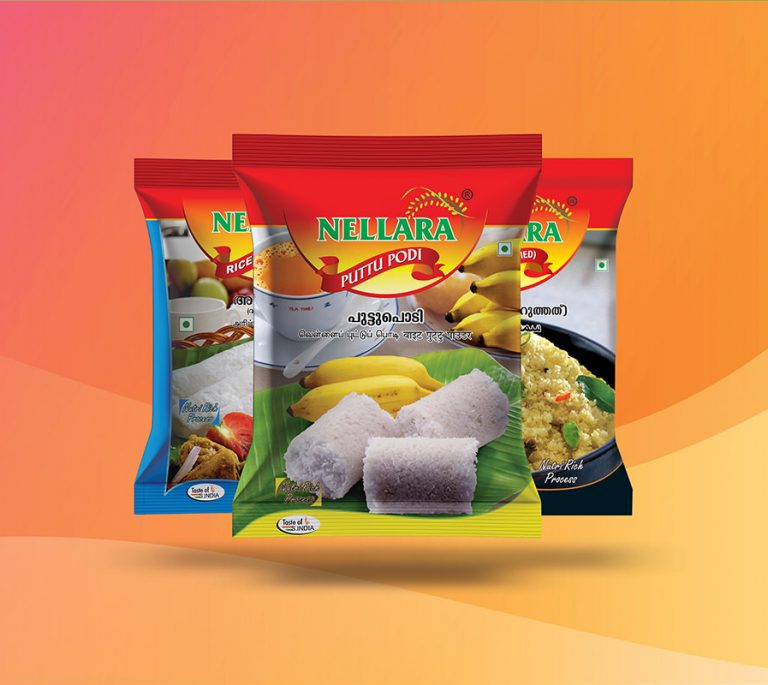
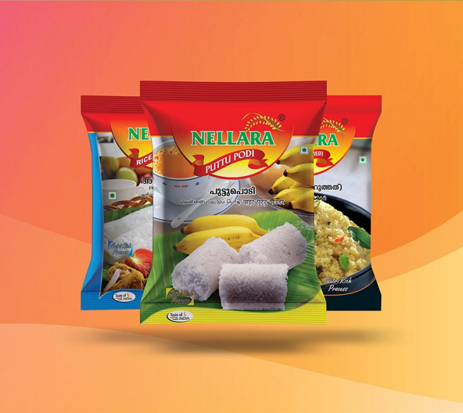
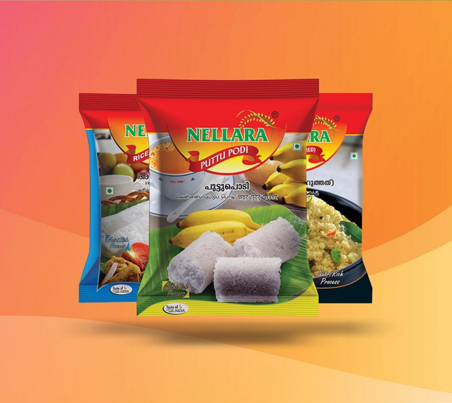

Kerala has long been known as the cradle of spices where you can find the best spices in the world
cultivated, produced and
shipped in abundance. If you’re seeking for fine quality food products to
add Indian essence to your daily meals, we are your best
choice!
Nellara is one of the leading food products manufacturers and distributors of raw food materials of
traditional and authentic
Indian spices and raw materials in Dubai at Happy prices.
We offer you the best Indian foods retaining all their essence as made in your own Kerala home kitchens
and along with that, We
ensure fair trade in all our food product supplies and exports. Since We
have large varieties of food products, we have placed
them in certain sections for our customer’s
easy access and they are featured products, heat and serve products, breakfast
products, ghee
products etc. features products are the most demanded products from our customers from each corner of
the
globe and those are one of the Top-selling food products of nellara. We are experts in selling
and shipping food products in both
wholesale and retail across the world.


Our natural and organic manufactured food products range of spices and aromatic food products are jus
perfect for both regular
home cooking and for professional cooks. Each and every product of Nellara
on ou
website are handpicked, processed and
manufactured by using fresh spices under well-sterilized
machines. Ou
featured products show our most demanded and customer
favourites from our food products. Our spices
have th
ability to enhance and bring extraordinary changes to your meals with our
aroma and goodness. Whateve
spices you need, we can deliver to you on time. The fine quality of our spices and products is
simpl
apparent from the fact that they come to you straight from the gardens or farms of spice growing regions
o
Kerala.
Nellara manufactured food products are shipped
worldwide to both wholesalers and retail whether
smallscale or largescale enterprises. We are
experts in shipping bulk amounts of goods and
food
materials based on the type and size of your
orders on time!